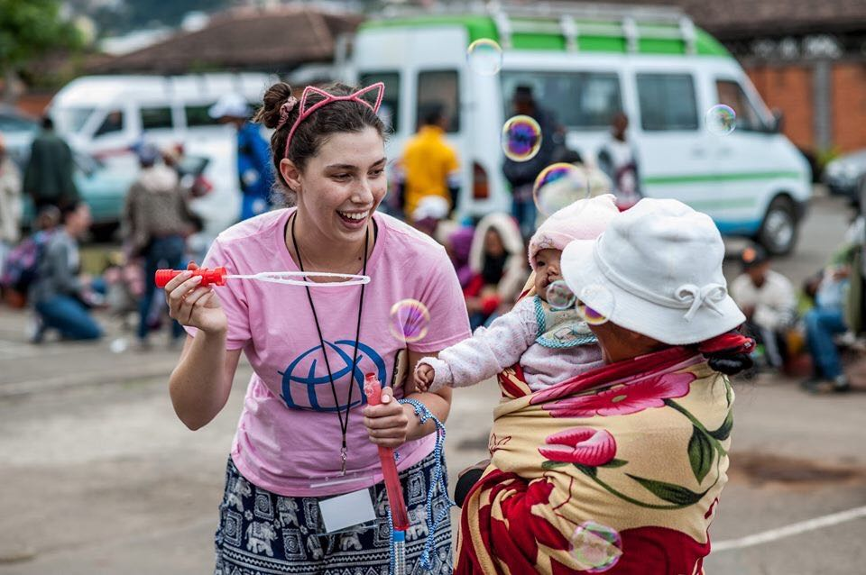

Climate change is a change in the earths’ normal global and regional weather patterns. This can include a change in the amount of rainfall a place gets or a different seasonal temperature than what is usual. Climate change is also defined as the change of the earth’s general climate, which impacts where rain or snow falls and the earth’s overall temperature. Climate change happens naturally on earth over the span of centuries, but the current rate at which the earth is warming up is happening much more rapidly than it would naturally. This is due to pollution from human activity. The hotter climate is melting polar ice at a rapid pace and elevating sea level, endangering many polar and arctic species.


Air pollution is one of the most impactful kinds of pollution to human health. The most emitted greenhouse gas is carbon dioxide due to fossil fuel use. Air pollution alone is responsible for over 6 million deaths a year and endangers many more lives. The World Health Organization estimates that over 2 billion people live in areas with highly polluted air. These conditions cause numerous respiratory problems such as asthma and lung irritation, as well as life-threatening diseases like cancer and nervous system damage. While greatly harming humans, climate change is also very impactful to the earth. Increased rates of hurricanes, wildfires, floods, and other natural disasters are happening due to these climate changes, and there has also been a rise of insect outbreaks and tree disease.
Ocean pollution is when toxic materials like plastic, oil, and waste are brought into oceans. There are two main ways that toxic materials reach the ocean - nonpoint source pollution, including small separate sources like septic trucks and cars, and point source pollution, including large single sources like oil or chemical spills. Ocean pollution is a huge global problem because it threatens the lives of countless sea creatures, therefore threatening the future of many other life forms including humans. About 8 million tons of plastic is dumped into the ocean each year, and most of it collects in large trash piles called garbage patches. One of the largest is the Great Pacific Garbage patch, covering an area roughly twice the size of Texas. This is extremely detrimental to the planet’s health, but you can help.

Whether or not it seems apparent, cooking can produce a lot of plastic and food waste, which are both detrimental to our planet. Food waste is often not the focal point of sustainability efforts, but can be massively detrimental. A great method to reduce this burden, can be composting. The USDA estimates that 31% of food waste is thrown away, in the US, so composting leftovers can be a great way to minimize your impact on the enviornment. ANother method can be incorporating typically thrown away foods into your day to day meals. The other massive contributor to climate change in the kitchen is plastic waste. Single use plastic is found in cutlery, storage, and packaging. In order to cut down, it's important to start slowly so not to overwhelm yourself. After all, any switch is benefical. An easy place to start is with mason jarss, reusable straws and a glass or reusable water bottle. From there, the switch to reusable plastic bags and other plastic free storage seems far less daunting.Also, cleaning products contribute vastly to plastic waste, so investing in a reusable cleaning system will vastly improve your carbon footprint.
Fast fashion is one of the largest contributors to carbon emissions currently. Brands like SHEIN, BooHoo and FashionNova crank out clothing to meet trends, and the short timeframe of trends means production rarely has any regard to their carbon footprint. Moreover, trends change so quickly that their pieces are often thrown away quickly. Other, higher end brands like Urban Outfitters have a similar impact on the enviornment due to their poor ethics in production. Instead, shopping at brands that emphasize ethical production can be a fast and easy way to lessen your impact on the enviornment. For denim, brands like boyish jeans, RE/DONE and Levi's have pioneered in the ethical denim field at all different prices. For flowy summery pieces, Reformation and Nobody's Child offer beautiful clothes at two price points, so anyone can lessen their impact. Brands like Stella McCartney x adidas and wearetala offer well made athleticwear that also puts ethics at a high standard. For on trend basics, brands like Frank and Oak and Everlane are great midrange options to swap out pieces in your wardrobe. For shoes, Vejas are a great option. Also, vintage and thrifting is a great way to have no carbon footprint whatsoever.
Across all price ranges, plastic packaging for beauty products seems inevitable. However, small switches can make a massive difference. Products that you use and run through quickly, like toothbrushes can be swapped out for bamboo versions or less wasteful versions. Similarly, disposable razors can be swapped out for subscription services like billie or Dollar Shave Club minimize waste by sending a razor handle and new heads only when necessary. Moreover, brands like LUSH have created products like shampoo, conditioner and lotion bars with no packaging whatsoever. For their products that do have packaging, the containers can be brought in to any store and after a certain number, can be exchanged for a free product. Also from LUSH, tooth paste tabs in paper packaging cut down on plastic waste tremendously by eliminating the monthly plastic tube. Moreover, small switches from aerosol products to non aersols are immsensely beneficial for the ozone layer. For example, this Brigeo dry shampoo comes in a squeeze bottle and eliminates metal waste. Finally, a crucial step in any zero waste bathroom is reef safe sunscreen.


Or, check out these 50 non-profit organizations working to combat climate change!
Malena is from Los Angeles, California. She is 14 years old and will be a sophomore at Brave Medical Magnet HS this fall. She plays the piano and her favorite author is John Green. She is looking forward to majoring in the tech field at college. She is passionate about fighting against climate change and fighting for human rights.
Whitney is 17 years old from Malibu, California. She goes to Malibu High School and will be a senior this fall. She plays competitive tennis and loves Law and Order:SVU. She is looking to major in either PreMed or Computer Science at college. She is passionate about activism, specifically feminism and enviornmentalism.
